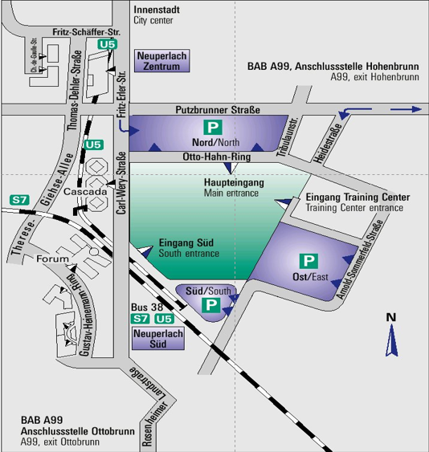

The workshop is free, although you will need to submit an brief expression of interest or a longer position paper. See How to participate.
Call for Participation
Introduction
Interoperability of devices and services for the Internet of Things (IoT) with cloud platforms and services at a worldwide scale is a huge challenge.
Recent developments in electronics have dramatically reduced the cost for devices functioning as tags, sensors, and actuators for the physical environment, i.e., the Internet of Things. The market potential for IoT devices and services is currently held back by fragmentation due to a plethora of communication technologies and the lack of a common approach to combining devices and services across different protocols, domains, and standards. There is no a common way to describe and combine semantic behavior.
RESTful Web technologies have become very important in recent years, such as HTTP, JSON, and JavaScript combined with open standards for data formats, interface definitions, and access control.
The mission of the Web of Things activities is to counter the fragmentation of the Internet of Things by forming a Web-based abstraction layer capable of interconnecting existing IoT platforms, devices, and cloud services and complementing available standards. Baseline specifications have been developed by the Web of Things Working Group during the last two years to define an architecture and a common format for describing devices and services.
There is a wide range of application domains including the following:
- Smart Home
- Smart Cities Environmental Monitoring
- Health: at home and in hospitals
- Manufacturing and Process Automation
- Supply Chain Management and Retail
- Construction and Building Information Modeling (BIM)
- Transportation
- Telecommunication
- Machine-to-Machine communication (M2M)
- Utilities: electricity, water, gas, drainage
- Energy Management and Smart Grid, Smart Appliances
- Disaster Control: floods, fires, earthquakes, and civil disturbances
- Security and Privacy
- Cross-domain applications combining the domains listed above
To achieve the goal for cross-platform interoperability, the W3C Web of Things Working Group has finalized a first set of standardized building blocks. They are based upon rich metadata that describes the data and interaction models exposed to applications, and the communications and security requirements for platforms to communicate effectively. During the course of the Web of Things standardization activities, the following specifications were created:
- WoT Architecture
- WoT Thing Description
- WoT Scripting API
- WoT Binding Templates
- WoT Security and Privacy Considerations
A W3C Workshop is now planned for mid 2019 to disseminate the findings and discuss the way forward with a wider set of stakeholders. To unlock the potential of an open ecosystem and open markets, the workshop will discuss how to reduce fragmentation of the IoT landscape and the future direction of the open W3C WoT standardization. A focus is on exposing and consuming services across specific IoT technologies to enable new use cases, such as common monitoring and control of assets from multiple vendors, interconnecting different application domains, and building digital twins of physical devices.
The workshop is free, although you will need to submit a brief expression of interest or a longer position paper. See How to participate.
Who Should Attend?
- Organizations interested in realizing their use cases with the Web of Things
- Web developers with an experience of creating IoT platforms, applications, and services
- Device vendors seeking to expand their market potential
- Network operators with an interest in M2M and scalable communications services
- Cloud platform and application vendors interested in hosting services for the Web of Things
- System integrators and consultancies with an interest in helping their clients with designing and deploying applications and services based upon the Web of Things
- Governments and regulatory agencies interested in enabling open markets for the Web of Things, and the associated challenges for security and privacy
See Section "Important dates" for submission and registration deadlines.
Workshop topics
Cross-Domain Business Models, Use Cases and Scenarios
- Interoperability scenarios for consumer, industrial, environmental, energy management, healthcare, automotive and smart cities
- Building a common IoT application ecosystem (tools, marketplaces, security, etc.)
- Interworking across evolving IoT standards (e.g., OCF, OPC, LWM2M, OneM2M, etc.)
Standardization Needs
- Architecture
- Cloud integration, applications, platforms, and services
- Edge computing integration, Thing-to-Thing, Thing-to-Edge
- Digital twins
- Directories, proxies, discovery mechanisms, and other infrastructure services
- Information models
- Semantic Processing, Reasoning, and IoT semantic vocabularies (e.g., iot.schema.org)
- Device capabilities and profiles
- Hypermedia patterns for actions and events
- Applications
- Browser and web application integration
- Scripting and other orchestration mechanisms
- Accessibility and advanced user interfaces
- Internationalization of the data
- Security and privacy
- Establishing trust in a multi-vendor environment
- Key management
- Local access and authorization
Location
Siemens AG, Otto-Hahn-Ring, 81739 München, Germany
How to get there?
From Munich central station / Ostbahnhof
- U5 bound for Neuperlach Süd or
- S7 bound for Kreuzstraße
From the airport
- S1 train service from the airport to Ostbahnhof (transfer to U5 as described above) or
- S8 from the airport to Ostbahnhof (transfer to U5 as described above)
Coming by car
- Autobahn direction Salzburg, via Munich east orbital route (A99), exit Hohenbrunn, take B471 direction Putzbrunn and follow sign to München-Perlach.
- After 6 km turn left into Tribulaunstraße and
- after 300 m right into Otto-Hahn-Ring.
What is W3C?
W3C is a voluntary standards consortium that convenes companies and communities to help structure productive discussions around existing and emerging technologies, and offers a Royalty-Free patent framework for Web Recommendations. W3C develops work based on the priorities of our members and our community.